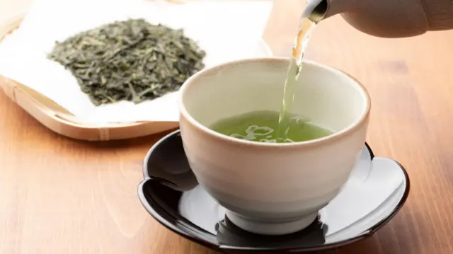
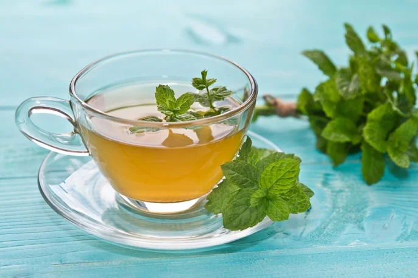

El té es la infusión preparada con las hojas secas molidas o brotes del arbusto Camellia sinensis en agua caliente
Last updated 3 mins ago

El té proviene principalmente de China continental, India, Sri Lanka, Taiwán, Japón, Nepal, Australia, Argentina y Kenia.
Last updated 3 mins ago

Las variedades de té se diferencian por sus métodos de elaboración y el grado de oxidación o de fermentación, reacciones químicas que se producen por el contacto con el oxígeno o por microorganismos que convierten el azúcar en alguna otra substancia, respectivamente y modifican el sabor y color del producto
Last updated 3 mins ago